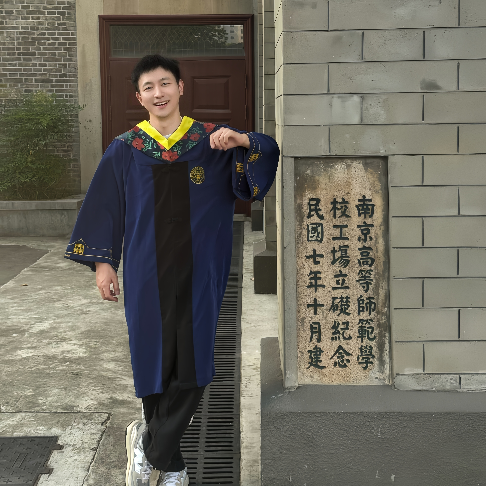

PhD in Computer Science, 2026–
School of Computing and Data Science (CDS)
I am a PhD student in Computer Science at The University of Hong Kong, supervised by Prof. Andrew F. Luo.
My research focuses on AI for Neuroscience and Brain–Computer Interfaces.

A large-scale multisite MRI study identifying three neuroanatomical subtypes of major depressive disorder, primarily distinguished by altered connections between the frontoparietal control and default mode networks.
An adaptive time-frequency framework revealing reproducible frequency and energy profiles across resting-state brain networks.
A large-scale multisite MRI study identifying frontal-centered disruption of structural covariance networks in major depressive disorder.
A disease-progression-based analysis revealing directed structural alterations across frontal, temporal, and medial prefrontal regions, with distinct patterns in first-episode and recurrent MDD.
A unified 2D–3D framework for efficient connectomics segmentation, proofreading, and neuron tracing.